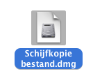
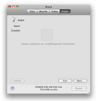
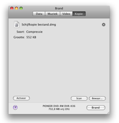
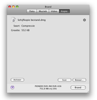

Schijven kopieëren
Brand
kan schijfkopie bestanden gebruiken. Deze bestanden stellen een
software-matige schijf voor. Brand kan ook schijven kopiëren.
Let op: Op Audio-CD's na kunnen meerdere-spoor schijven kunnen niet
worden
gekopieerd. De Audio-CD's zijn geen
één-op-één kopiëen.
In Panther kunnen alleen cdr, toast en iso bestanden worden gebrand.
Daarnaast kunnen basis cue/bin bestanden worden gebrand. Het is wel
mogelijk om andere schijfkopie bestanden te gebruiken (dmg, img) als
deze gemount zijn in de Finder en daarna naar het Brand venster worden
gesleept.
1 Selecteer een schijf
Selecteer een schijfkopie bestand of schijf.

2 Sleep het bestand in venster
Sleep het schijfkopie bestand (dmg, img, toast, iso, cdr, dvdr,
cue/bin and TOC) of een schijf in Brand's hoofd venster.
 

3 Klik op Brand
Hierdoor word een dialoog getoond.

4 Kies opties
Kies hier de voor de opties tijdens het branden gebruikt moeten
worden.
Voor meer brand instellingen zie de "Voorkeuren" onder het Brand menu.

5 Brand de schijf
Klik op Brand om de schijf te branden.

7 Brand
gaat nu de schijf branden
Tijdens
het branden wordt een dialoog getoond met de voortgang.